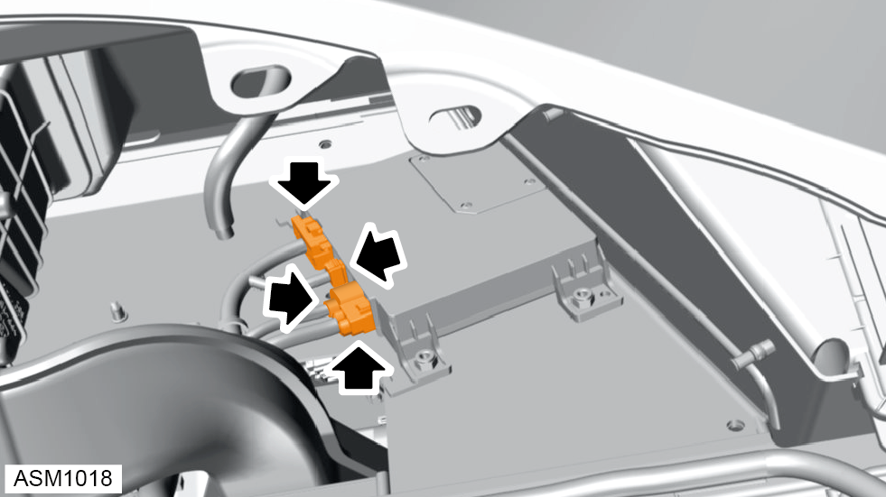
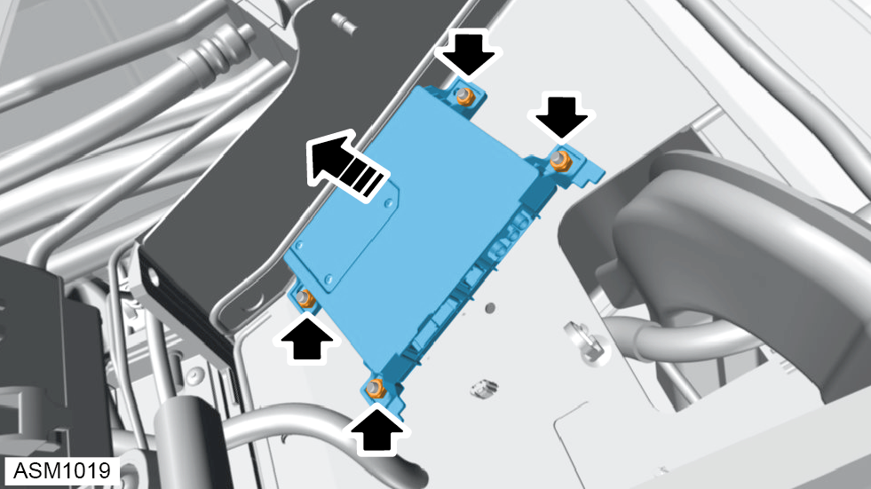

Control Unit - Telematic Module (TEM)
Print
Operation Code: 17.27.33-02
Removal
- Remove instrument panel assembly. Refer to procedure.

- Disconnect harness connectors (x4) from telematic module (TEM).

- Remove M6 nyloc nuts (x4) securing TEM to vehicle.
- Remove TEM.
Installation
- Installation is the reverse of removal procedure except for the following:
- After installation perform a software update using Lotus Insight tool.